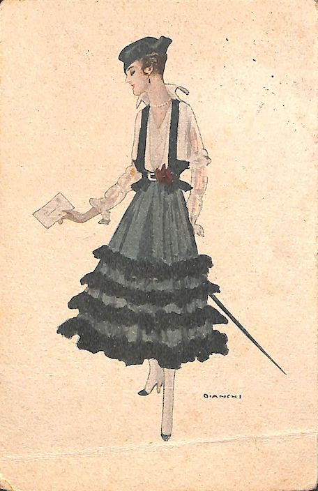
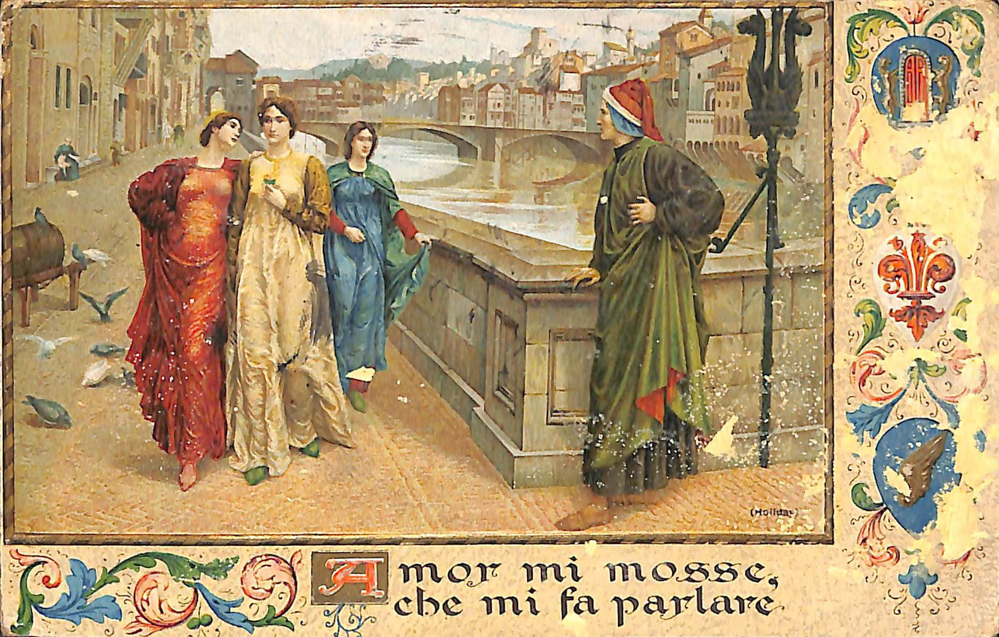

Progetto di Codifica di Testi a cura di:Simone Failla Ente di appartenenza:La Spezia Compilatore:Tommaso Castagneto Responsabile scientifico:Giacomo PaolicchiEnrica Salvatori Funzionario responsabile:Marzia Ratti
Edizione:Facsimile digitale da scannerizzazioni
Editore:Unipi
Luogo di pubblicazione:Pisa
Disponibilità:Disponibile previo consenso del depositante ai soli fini della ricerca accademica
e dell'insegnamento. 2019
Distributore:CNR Consiglio Nazionale di RicercaVia Giuseppe Moruzzi 156124Pisa
TeiCorpus
Autore:Simone Failla
Luogo di pubblicazione:Pisa
2020
Paese:Italy La Spezia. Museo Civico Etnografico "Giovanni Podenzana", Sezione dei cimeli garibaldini e della
Prima Guerra Mondiale
Tipologia:Cartoline Artistiche Italiano
Informazioni sulla codifica
Cartoline raccolte per il progetto di codifica di testi, corso di laurea di Informatica
Umanistica, universita di Pisa.Selezione avvenuta tramite osservazione di fenomeni eterogenei fra due cartoline oggetto
di codifica.Riproduzione il più possibile fedele dei fenomeni testuali con il minor numero possibile
di aggiunte dall'editore (a livello diplomatico-interpretativo) con analisi editoriale
dei contenuti e delle categorie grammaticali (tagset UCREL CRAWLS7).Parole in disuso marcate con orig e regolarizzate con elemento reg. Tutti i segni di punteggiatura nel testo sorgente sono stati mantenuti e rappresentati.
Dove necessario, aggiunti. Riferimenti creati con gli elementi bibl e note.
[Donna con lettera]
Autore:Bianchi, Alberto
Autore:Coliola, Giovanni
Editore:Unipi
Distributore:CNR Consiglio Nazionale di RicercaVia Giuseppe Moruzzi 156124Pisa 2019
Luogo di pubblicazione:Pisa
Disponibilità:Disponibile previo consenso del depositante ai soli fini della ricerca accademica
e dell'insegnamento. Cartolina che rappresenta una donna con lettera e bastone.La cartolina fu verificata
per la censura e ne riporta il timbro sul retro.
[Donna con lettera]
Autore:Coliola, Giovanni
Luogo di pubblicazione:La Spezia
1917
Paese:Italia La Spezia (SP). Museo Civico Etnografico "Giovanni Podenzana", Sezione dei cimeli garibaldini e della
Prima Guerrra Mondiale
Identificativo:7694_031_001/002
Tipologia:Cartolina Artistica Italiano
Dimensioni:9x
14cm
Materiale:carta
Oggetto:Cartolina
francobollo - Poste Italiane da 5 centesimi
status:Buono Persone coinvolte:
- Nome:
Bianchi
Alberto
Occupazione:Illustratore.
- Nome:
Turtura
Oliva
Occupazione:Occupazione sconosciuta.
- Nome:
Giovanni
Coliola
Occupazione:Tenente colonnello. Ravenna città. Ravenna RV
Paese:IT ... cartolina artistica appartenente al comune di La Spezia con collocazione specifica
al Museo Civico Etnografico "Giovanni Podenzana", Sezione dei cimeli garibaldini e
della Prima Guerra Mondiale di buona conservazione
4 Gennaio 1917 Elaborazione dati, Codifica di testi, Trascrizione, Cartolina, Informatica, digital humanities, La Spezia, Bianchi,
Lingua: italiano Calendario Gregoriano Corrispondenza: Giovanni Coliola Oliva Turtura Ravenna.
cartolina di Giovanni Coliola a Oliva Turtura
4 Gennaio 1917 Note: Numero 31 di inventario in alto a sinistra, aggiunto dal catalogatore Scritto da una sola mano con inchiostro nero.

Cartolina che rappresenta una donna con lettera e bastone, illustrata da Alberto Bianchi
(Rimini 1882 - Milano 1969). Pittore, illustratore, cartellonista. Figlio e nipote
d'arte. Realizzava vari bozzetti per fortunate serie di cartoline illustrate, caratterizzate
dal gusto elegante e frivolo della high society di cui era assiduo frequentatore.
Fronte
BIANCHI
Retro
Gentili
[...]
Sig
.
na
|
|
Signorina
Oliva Turtura
Via
Girolami Ronfi
28
Ravenna
Cari
[...]
,
li
4
/
1
-
1917
Ti
[...]
fortemente
Giovanni
/
V
E
R
I
/
F
I
C
A
T
O
/
P
E
R
[add]
/
C
E
N
S
[add]
U
R
A
timbro di verifica censura
31
annotazione d'inventario numero all'angolo in alto a sinistra
831/ 5
/
5
Numero seriale cartolina Francobollo delle Poste Italiane di 5 centesimi raffigurante la testa di un uomo timbro raffigurante stemma del comando
Fonti e note
timbro di verifica censura
annotazione d'inventario numero all'angolo in alto a sinistra
Numero seriale cartolina
Francobollo delle Poste Italiane di 5 centesimi raffigurante la testa di un uomo
Incontro di Dante con Beatrice
Autore:Borgi, Umberto
Autore:Alighieri, Dante
Editore:Unipi
Distributore:CNR Consiglio Nazionale di RicercaVia Giuseppe Moruzzi 156124Pisa 2019
Luogo di pubblicazione:Pisa
Disponibilità:Disponibile previo consenso del depositante ai soli fini della ricerca accademica
e dell'insegnamento. Cartolina artistica. Dante guarda Beatrice camminare con altre due donne. Sul retro
troviamo stampati i primi 4 versi della poesia “Tanto gentile e tanto onesta pare”
di Dante, seguiti da un breve commento dell'opera. Troviamo anche la stampa “Proprietà
Artistica E.Sborgi-Firenze”.
Incontro di Dante con Beatrice
Autore:Borgi, Umberto
Autore:Alighieri, Dante
Editore:Sborgi
Luogo di pubblicazione:Firenze
1911
Paese:Italia La Spezia (SP). Museo Civico Etnografico "Giovanni Podenzana", Sezione dei cimeli garibaldini e della
Prima Guerrra Mondiale
Identificativo:7694_080_001/002
Tipologia:Cartolina Artistica Italiano
Dimensioni:9x
14cm
Materiale:carta
Oggetto:Cartolina
status:Buono Persone coinvolte:
- Nome:
Alighieri
Dante
Occupazione:Poeta.
- Nome:
Borgi
Umberto
Occupazione:Critico. Ravenna città. Ravenna RV
Paese:IT Firenze città. Firenze FI
Paese:IT cartolina artistica appartenente al comune di La Spezia con collocazione specifica
al Museo Civico Etnografico "Giovanni Podenzana", Sezione dei cimeli garibaldini e
della Prima Guerra Mondiale di buona conservazione.
14 Novembre 1911
Lingua: italiano Rime nuove, Inferno, Holliday, UniPi, Borgi, DanteCalendario Gregoriano Note: Numero 80 di inventario in alto a sinistra, aggiunto dal catalogatore sezione stampata con inchiostro nero. Scritto da una sola mano con inchiostro nero.

Dipinto storico di Henry Holiday (1839-1927), Dante incontra Beatrice al Ponte Santa
Trinità,soggetti: Dante Alighieri, Beatrice Portinari. Data: 1883, tecnica: olio su
tela. Dimensioni:140x199 cm. Si possono vedere il fiume Arno e il Ponte Vecchio di
Firenze sullo sfondo.
Fronte
Amor
mi
mosse
,
che
mi
fa
parlare
Dante Alighieri, Inferno, It., XIV sec. (canto II, Verso 72).
Retro
/
IN[add]
CONTRO
DI
DANTE
CON
BEATRICE
Tanto
gentile
e
tanto
onesta
pare
La
donna
mia
,
quand
’
ella
altrui
saluta
Ch |
| Che
’
ogni
lingua
divien |
| diviene
tremando
muta
E
gli
occhi
non
ardiscon |
| ardiscono
di
guardare
.
Dante Alighieri, Rime Nuove, It., XIV sec. (Versi 1-4, Rime XXII).
Così
Dante
,
nella
visione
incantata
di
Beatrice
sua
,
Chiudeva
nel
dolcissimo
verso
tutto
il
cuore
pieno
e
Tremante
di
passione
.
e
così
,
tremante
,
Egli
deve
averla
guardata
passare
per
/
le[add]
libere
vi
e
della
sua
città
,
passare
benignamente
d
'
umiltà
vestuta |
| vestita
p
/
[...]
f
onda
,
gentile
cosa
divina
scesa
/
[...]
di
cielo
in
terra
a
miracolo
mostrare
.
Dante Alighieri, Rime Nuove, It., XIV sec. (Versi 6-9, Rime XXII).
/
[...]
ce
tempo
delle
maggiolate
,
delle
corti
d
'
amore,
dei
tornei
fioriti
.
Dante
aveva
in
cuore
già
il
suo
poema
e
Giotto
le
sue
Madonne
e
Firenze
S
.
|
| S
anta
Maria
del
Fiore
.
era
il
boccio
omai |
| ormai
perfetto
e
pieno
,
onde |
| dove
,
colla |
|
con
la
letizia
e
la
veemenza
di
una
primavera
improvvisa
,
fiorì
l
'
arte
Fiorentina
e
con
essa
la
civiltà
nuova
d
'
Italia
e
del
mondo
tutto
.
Ma
Dante
,
primo
segno
ed
espressione
pura
di
essa
,
/
luce[add]
di
una
gra
n[add]
de
alba
nella
tenebra
fitta
medioevale
,
/
[...]
eniva
-
Egli
eroe
divino
tra
gli
uomini
-
uomo
e
,
/
man[add]
tenendo
nel
gran
petto
l
'
impeto
titanico
e
l
'
invettiva
/
[...]
,
cantava
,
coll
'
anima
fiorita
del
segno
di
fran
-
/
cesca[add]
cantava
:
Donne
,
che
avete
intelletto
di
amore
Dante Alighieri, Rime Nuove, It., XIV sec. (Verso 1, Rime XIV).
U
.
|
|
UMBERTO
SBORGI
Sborgi, Umberto. Nato a Cecina nel
1883 , fu emerito insegnante nelle Università di Parma e Milano; dal
1941 al 1953 . Fu direttore dell'Istituto di Chimica generale ed Inorganica in quest'ultimo Ateneo
ed autore di numerose pubblicazioni;
ha proseguito un percorso scientifico, politico e sociale costruito sul rispetto per
la natura, il pensiero, il corpo, la sottile creatività individuale.
Ricordati
de
la
Tia
_
14-11-1911
76
numero seriale cartolina.
Proprietà
Artistica
E
.
Sborgi
-
Firenze
.
80
numero di inventario annotato sulla cartolina.
Fonti e note
Dante Alighieri, Inferno, It., XIV sec. (canto II, Verso 72).Dante Alighieri, Rime Nuove, It., XIV sec. (Versi 1-4, Rime XXII).Dante Alighieri, Rime Nuove, It., XIV sec. (Versi 6-9, Rime XXII).Dante Alighieri, Rime Nuove, It., XIV sec. (Verso 1, Rime XIV).
Sborgi, Umberto. Nato a Cecina nel
1883, fu emerito insegnante nelle Università di Parma e Milano; dal
1941 al 1953. Fu direttore dell'Istituto di Chimica generale ed Inorganica in quest'ultimo
Ateneo ed autore di numerose pubblicazioni;
ha proseguito un percorso scientifico, politico e sociale costruito sul rispetto per
la natura, il pensiero, il corpo, la sottile creatività individuale.